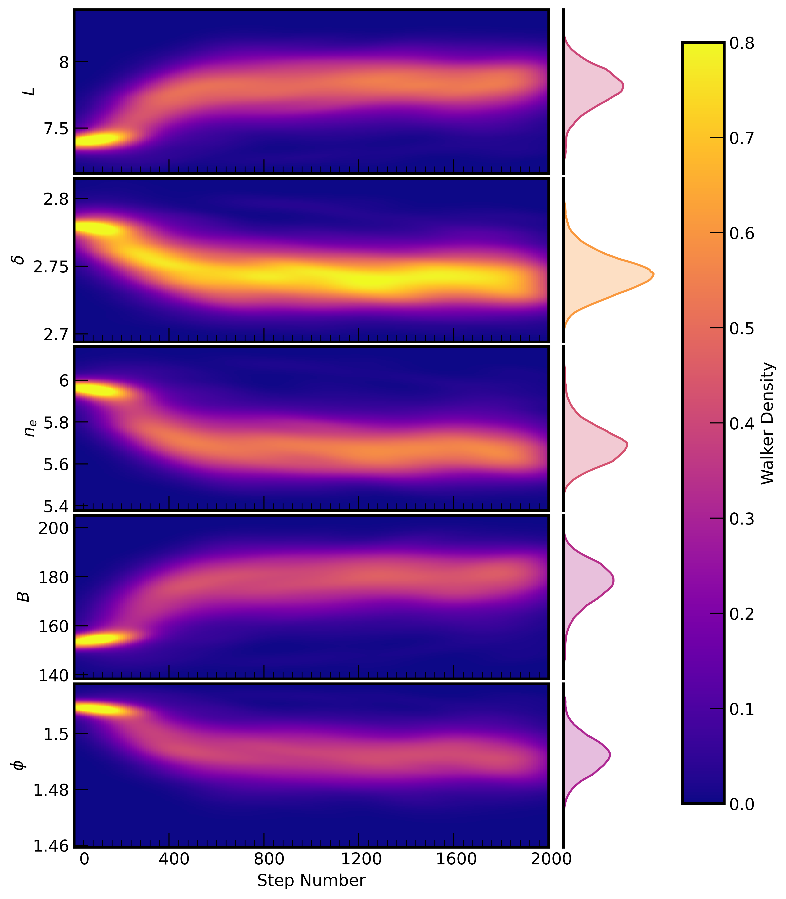

B2. Walker plot
Contents
B2. Walker plot#
B2.1. Notebook setup#
import matplotlib as mpl
import matplotlib.pyplot as plt
import numpy as np
import emcee
from scipy.stats import gaussian_kde
B2.2. Download data#
Unzip the contents into a folder named data in the same level as the notebooks folder. The directory structure should end up looking like the following:
thermal-gs
├── data
│ ├── thermal-gs.mplstyle
│ ├── UXArietis_chain_burnin.h5
│ ├── ...
├── figures
│ ├── ux-arietis_walkerplot_burnin.pdf
│ ├── ux-arietis_walkerplot_burnin.png
│ ├── ...
├── notebooks
│ ├── walker-plot_appendixB.ipynb
│ ├── ...
.
.
.
B2.3. Load#
sampler = emcee.backends.HDFBackend('../data/UXArietis_chain_burnin.h5')
samples = sampler.get_chain()
plt.style.use('../data/thermal-gs.mplstyle')
B2.4. Plot#
thin = 10
plt_labels = ['$L$', '$\delta$', '$n_e$', '$B$', '$\phi$']
fig, axes = plt.subplots(samples.shape[2], 2, figsize=(8.5, 11), gridspec_kw={'width_ratios': [4, 1]})
fig.subplots_adjust(hspace=0.03, wspace=0.05)
n = np.empty((int(samples.shape[0]/thin), samples.shape[1]))
for i in range(n.shape[0]):
n[i] = np.full(1, (1+i)*thin)
for i in range(samples.shape[2]):
ax = axes[i]
nbins = [int(samples.shape[0]/thin), 200]
x = n.flatten(); y = samples[::thin, :, i].flatten()
k = gaussian_kde([x, y])
xi, yi = np.mgrid[x.min():x.max():nbins[0]*1j, y.min():y.max():nbins[1]*1j]
zi = k(np.vstack([xi.flatten(), yi.flatten()]))
zi /= np.max(zi)
zi = zi.reshape(xi.shape)
im = ax[0].pcolormesh(xi, yi, zi.reshape(xi.shape), vmin=0, vmax=0.8, cmap='plasma', shading='auto', rasterized=True)
ax[0].set_xlim(0, len(samples))
ax[0].set_ylabel(r'%s' % plt_labels[i])
ax[0].xaxis.set_major_locator(mpl.ticker.MultipleLocator(samples.shape[0]/5))
ax[0].xaxis.set_minor_locator(mpl.ticker.MultipleLocator(samples.shape[0]/50))
ax[0].xaxis.set_major_formatter(mpl.ticker.NullFormatter())
ax[0].yaxis.set_major_formatter(mpl.ticker.FormatStrFormatter('%3.3g'))
cmap = mpl.cm.get_cmap('plasma')
rgba = cmap(np.max(np.median(zi, axis=0)))
ax[1].plot(np.median(zi, axis=0), yi[0], color=rgba)
ax[1].fill_betweenx(yi[0], 0, np.median(zi, axis=0), alpha=0.3, color=rgba)
ax[1].set_xlim(0, 1)
ax[1].xaxis.set_major_locator(mpl.ticker.NullLocator())
ax[1].yaxis.set_major_locator(mpl.ticker.NullLocator())
ax[1].xaxis.set_major_formatter(mpl.ticker.NullFormatter())
ax[1].yaxis.set_major_formatter(mpl.ticker.NullFormatter())
ax[1].spines['top'].set_visible(False)
ax[1].spines['right'].set_visible(False)
ax[1].spines['bottom'].set_visible(False)
axes[-1][0].set_xlabel('Step Number')
axes[-1][0].xaxis.set_major_formatter(mpl.ticker.FormatStrFormatter('%5.0f'))
fig.subplots_adjust(right=0.85)
cbar_ax = fig.add_axes([0.85, 0.15, 0.05, 0.7])
fig.colorbar(im, cax=cbar_ax, label='Walker Density')
fig.set_facecolor('white')
plt.savefig('../figures/ux-arietis_walkerplot_burnin.png', bbox_inches='tight')
plt.savefig('../figures/ux-arietis_walkerplot_burnin.pdf', bbox_inches='tight')
plt.show()
